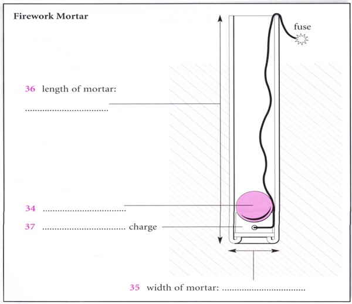
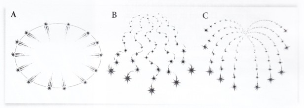

What does Lisa say about each object?
Complete the table as follows. Write
| Documents | Answer |
|---|---|
| 1. At least £50 | |
| 2. Warm clothing | |
| 3. Personal computer | |
| 4. Food from home | |
| 5. Favourite tapes or CDs | |
| 6. Photos from home |
Complete the sentences below.
Write NO MORE THAN THREE WORDS AND/OR A NUMBER for each answer.
The labels on Dan's luggage must state 'Mr & Mrs ' and their address.
Lisa says he should carry some spare clothes in .
For health reasons, Dan intends to wear during the flight.
Dan should practise carrying his luggage for a minimum distance of .
Choose THREE letters A-F.
What does Sally say about universities?
11.
12.
13.
Complete the notes below
Write NO MORE THAN THREE WORDS for each answer.
| Disability | Facilities |
|---|---|
| General | personal care and assistance |
| Mobility impairment |
ramps and easy access, fire and emergency procedures 14 lavatory facilities |
| 15 | induction loops, flashing sirens, 16 |
| Sight impairment | Braille translators, 17 on stairs, floors, etc. fire and emergency procedures |
| Dyslexia | use of computer 18 to finish work |
| Other difficulties | access to treatment: medication/therapy procedures |
Choose the correct letter A, B, C, or D.
What is the speaker's main purpose?
Complete the notes below using letter A-F from the box.
NB You may use any letter more than once.
ORIENTATION COURSE FOR INTERNATIONAL STUDENTS
What Liz liked about the course.
21.
22. in any order
23.
What Mark thinks could be improved.
24.
25. in any order
26.
Choose the correct letters A, B, C, or D.
SECTION 4 QUESTIONS 31 - 40
Complete the sentences below.
Write NO MORE THAN TWO WORDS AND/OR A NUMBER for each answer.
Label the diagram. Write NO MORE THAN THREE WORDS AND/OR A NUMBER for each answer.

Choose the correct letters A, B or C.
